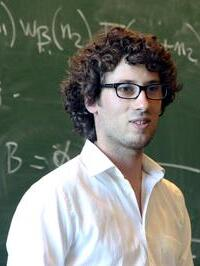

Hugo Duminil-Copin | |
|---|---|
 Duminil-Copin in 2014 | |
| Born | 26 August 1985 Châtenay-Malabry, Île-de-France, France |
| Education | Lycée Louis-le-Grand |
| Alma mater | |
| Awards |
|
| Scientific career | |
| Fields | Mathematics |
| Institutions | |
| Thesis | Phase transition in random-cluster and O(n)-models (2011) |
| Stanislav Smirnov | |
.jpg){kind=link}
Hugo Duminil-Copin (born 26 August 1985) is a French mathematician specializing in probability theory. He was awarded the Fields Medal in 2022.
Biography
The son of a middle school sports teacher and a former female dancer who became a primary school teacher, Duminil-Copin grew up in the outer suburbs of Paris, where he played a lot of sports as a child, and initially considered attending a sports-oriented high school to pursue his interest in handball.[1] He decided to attend a school focused on mathematics and science,[1] and enrolled at the Lycée Louis-le-Grand in Paris earning his Baccalauréat Scientifique with a mention très bien in 2003 and was admitted at the École Normale Supérieure in 2005 and the University Paris-Sud. He decided to focus on math instead of physics, because he found the rigour of mathematical proof more satisfying, but developed an interest in percolation theory, which is used in mathematical physics to address issues in statistical mechanics.[1] In 2008, he moved to the University of Geneva to write a PhD thesis under Stanislav Smirnov. Duminil-Copin and Smirnov used percolation theory and the vertices and edges connecting them in a lattice to model fluid flow and with it phase transitions. The pair investigated the number of self-avoiding walks that were possible in hexagonal lattices, connecting combinatorics to percolation theory. This was published in the Annals of Mathematics in 2012, the same year in which Duminil-Copil was awarded his PhD at the age of 27.[1]
In 2013, after his postdoctorate, Duminil-Copin was appointed assistant professor, then full professor in 2014 at the University of Geneva.[2] In 2016, he became permanent professor at the Institut des Hautes Études Scientifiques.[3] Since 2019, he has been member of the Academia Europaea.[4]
Since 2017, Duminil-Copin has been the principal investigator of the European Research Council – Starting Grant “Critical behavior of lattice models (CriBLam)”. He is a member of the Laboratory Alexander Grothendieck, a CNRS joint research unit with IHES.[2]
Duminil-Copin's work focuses on the mathematical area of statistical physics. Duminil-Copin uses ideas from probability theory to study the critical behavior of various models on networks.[2] His work focuses on identifying the critical point at which phase transitions occur, what happens at the critical point, and the behaviour of the system just above and below the critical point.[1] He has been working on dependent percolation models whereby the state of an edge in one part of a lattice will affect the state of edges elsewhere, to shed light of Ising models, which are used to study phase transitions in ferromagnetic materials. In collaboration with Vincent Beffara in 2011, he was able to produce a formula for a determining the critical point for many two-dimensional dependent percolation models.[1] In 2019, along with Vincent Tassion and Aran Raoufi, he published research on the size of connected components in the lattice when the system is just below and above the critical point. They showed that below the critical point, the probability of having two vertices in the same connected component of the lattice would decay exponentially with separation distance, and that a similar result applies above the critical point, and that there is an infinite connected component above the critical point. Duminil-Copin and his associates proved this characteristic, which they called "sharpness", using mathematical analysis and computer science.[1] He has also shed more light on the nature of the phase transition at the critical point itself, and whether the transition will be continuous or discontinuous, under various circumstances, with a focus on Potts models.[1]
Duminil-Copin is researching conformal invariance in dependent percolation models in two dimensions. He said that by proving the existence of these symmetries, a great deal of information about the models would be extracted.[1] In 2020, he and his collaborators proved that rotational invariance exists at the boundary between phases in many physical systems.[5][6]
Duminil-Copin was awarded the 2017 New Horizons in Mathematics Prize for his work on Ising type models.[7]
Duminil-Copin was awarded the Fields Medal in 2022 for "solving longstanding problems in the probabilistic theory of phase transitions in statistical physics, especially in dimensions three and four".[8][9] Wendelin Werner credited Duminil-Copin with generalising the field of percolation theory, saying that "Everything is easier, streamlined. The results are stronger. … The whole understanding of these physical phenomena has been transformed."[1] Werner said that Duminil-Copin has solved "Basically half of the main open questions" in percolation theory.[1]
Duminil-Copin's hobbies include sports, which he has stated helps him find inspiration when working.[1] He is married and has a daughter.[10]
Awards
- 2022 Fields Medal[11][12][13]
- 2019 Dobrushin Prize[2]
- 2018 Invited speaker (session Probability and session Mathematical Physics) at the International Congress of Mathematicians of Rio de Janeiro[14]
- 2017 Loève Prize[15]
- 2017 Jacques Herbrand Prize[16]
- 2017 New Horizons in Mathematics Prize[7]
- 2016 Prize of the European Mathematical Society[17]
- 2015 Early Career Award of the International Association of Mathematical Physics[18]
- 2015 Peccot Lectures at the Collège de France[19]
- 2013 Oberwolfach Prize[20]
- 2012 Rollo Davidson Prize (with Vincent Beffara)[13]
- 2012 Vacheron-Constantin Prize[21]
Selected publications
- Aizenman, Michael; Duminil-Copin, Hugo (2021), Marginal triviality of the scaling limits of critical 4D Ising and ϕ44 models. Ann. of Math. (2) 194 (2021), no. 1, 163–235.
- Duminil-Copin, Hugo (2016). Graphical representations of lattice spin models : cours Peccot, Collège de France : janvier-février 2015. Spartacus IDH. ISBN 978-2-36693-022-1. OCLC 987302673.
- Duminil-Copin, Hugo; Smirnov, Stanislav (1 May 2012). "The connective constant of the honeycomb lattice equals ". Annals of Mathematics. 175 (3): 1653–1665. arXiv:1007.0575. doi:10.4007/annals.2012.175.3.14. ISSN 0003-486X. S2CID 59164280.
- Beffara, Vincent; Duminil-Copin, Hugo (18 March 2011). "The self-dual point of the two-dimensional random-cluster model is critical for " (PDF). Probability Theory and Related Fields. 153 (3–4). Springer Science and Business Media LLC: 511–542. arXiv:1006.5073. doi:10.1007/s00440-011-0353-8. ISSN 0178-8051. S2CID 55391558.
- Duminil-Copin, Hugo; Hammond, Alan (13 October 2013). "Self-Avoiding Walk is Sub-Ballistic". Communications in Mathematical Physics. 324 (2). Springer Science and Business Media LLC: 401–423. arXiv:1205.0401. Bibcode:2013CMaPh.324..401D. doi:10.1007/s00220-013-1811-1. ISSN 0010-3616. S2CID 10829154.
- Bauerschmidt, Roland; Duminil-Copin, Hugo; Goodman, Jesse; Slade, Gordon (2012). "Lectures on Self-Avoiding Walks". MathProblems. arXiv:1206.2092.
References
- ^ a b c d e f g h i j k l Cepelewicz, Jordana (5 July 2022). "Hugo Duminil-Copin Wins the Fields Medal". Quanta Magazine. Archived from the original on 5 July 2022. Retrieved 5 July 2022.
- ^ a b c d "Hugo Duminil-Copin, a French mathematician and a permanent professor at IHES, has been awarded the Fields Medal". CNRS. 5 July 2022. Archived from the original on 5 July 2022. Retrieved 6 July 2022.
- ^ "Webpage of Hugo Duminil-Copin". www.ihes.fr. Archived from the original on 22 October 2020. Retrieved 15 August 2020.
- ^ Hasani, Ilire; Hoffmann, Robert. "Academy of Europe: Duminil-Copin Hugo". Academy of Europe. Archived from the original on 11 April 2021. Retrieved 5 July 2022.
- ^ "Mathematicians Prove Symmetry of Phase Transitions". Wired. ISSN 1059-1028. Archived from the original on 14 July 2021. Retrieved 14 July 2021.
- ^ Duminil-Copin, Hugo; Kozlowski, Karol Kajetan; Krachun, Dmitry; Manolescu, Ioan; Oulamara, Mendes (21 December 2020). "Rotational invariance in critical planar lattice models". arXiv:2012.11672 [math.PR].
- ^ a b "Breakthrough Prize – Mathematics Breakthrough Prize Laureates – Hugo Duminil-Copin". Breakthrough Prize. Archived from the original on 4 June 2022. Retrieved 5 July 2022.
- ^ "Fields Medal 2022: Short citation" (PDF). Archived (PDF) from the original on 5 July 2022. Retrieved 5 July 2022.
- ^ Hoyer, Lukas von (5 July 2022). "Der "Nobelpreis der Mathematik" geht an Schweizerin und Schweizer". Augsburger Allgemeine (in German). Archived from the original on 5 July 2022. Retrieved 5 July 2022.
- ^ Celerier, Pierre (5 July 2022). "Duminil-Copin, Fields-winning mathematician with 'aesthetic vision'". Phys.org. Archived from the original on 5 July 2022. Retrieved 5 July 2022.
- ^ "Fields Medals 2022". International Mathematical Union (IMU). 6 June 1958. Archived from the original on 5 July 2022. Retrieved 5 July 2022.
- ^ Larousserie, David (5 July 2022). "La médaille Fields pour Hugo Duminil-Copin, mathématicien probabiliste de 36 ans et " percolateur " universel". Le Monde.fr (in French). Archived from the original on 5 July 2022. Retrieved 5 July 2022.
- ^ a b "Hugo Duminil-Copin, mathématicien français et professeur permanent à l'IHES, est lauréat de la médaille Fields". CNRS (in French). 5 July 2022. Archived from the original on 5 July 2022. Retrieved 5 July 2022.
- ^ "Hugo Duminil-Copin – National Meeting of the SPM 2021". National Meeting of the SPM 2021 – Encontro Nacional da Sociedade Portuguesa de Matemática 2021. 12 December 1940. Archived from the original on 7 July 2022. Retrieved 5 July 2022.
- ^ "Hugo Duminil-Copin awarded the Loève Prize and the Grand Prix Jacques Herbrand". IHES. 8 August 2017. Archived from the original on 7 July 2022. Retrieved 5 July 2022.
- ^ "Hugo Duminil-Copin receives the Prix Jacques Herbrand 2017". SwissMAP. 21 November 2017. Archived from the original on 7 July 2022. Retrieved 5 July 2022.
- ^ "Hugo Duminil-Copin is awarded the European Mathematical Society Prize". IHES. 30 June 2016. Archived from the original on 7 July 2022. Retrieved 5 July 2022.
- ^ "International Association of Mathematical Physics". IAMP. 31 January 2018. Archived from the original on 31 December 2021. Retrieved 5 July 2022.
- ^ "Hugo Duminil-Copin". Collège de France. Archived from the original on 7 July 2022. Retrieved 6 July 2022.
- ^ "Hugo Duminil-Copin receives the Oberwolfach Prize". SwissMAP. 5 June 2014. Archived from the original on 7 July 2022. Retrieved 5 July 2022.
- ^ "Rencontre avec Hugo Duminil-Copin, CQFD du 29.03.2013". rts.ch. 29 March 2013. Archived from the original on 7 July 2022. Retrieved 5 July 2022.
Further reading
- Chang, Kenneth (5 July 2022). "Fields Medals in Mathematics Won by Four Under Age 40". The New York Times. Retrieved 5 July 2022.
- "Le Français Hugo Duminil-Copin remporte la médaille Fields, avec trois autres mathématiciens". leparisien.fr (in French). 5 July 2022. Retrieved 5 July 2022.
- Bischoff, Manon (5 July 2022). "Fields-Medaille: Mathematik-Preis für 24-dimensionale Kugeln". Spektrum der Wissenschaft (in German). Retrieved 5 July 2022.